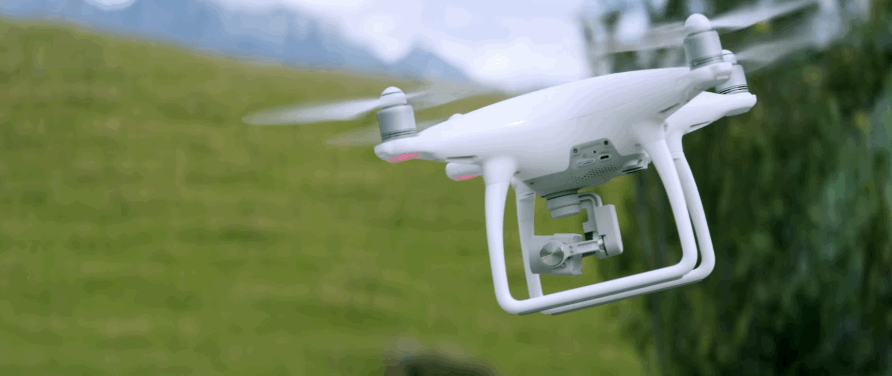

Drone technology is defined by (Lutkevich, 2019); a drone is an unmanned aerial vehicle. Drones are more commonly known as unmanned aerial vehicles (UAVs) or unmanned aerial systems. Essentially, drones are flying robots that can fly remotely or autonomously using software-driven flight plans in embedded systems that work in concert with onboard sensors and a global positioning system (GPS).
UAVs are most associated with the military. They were originally used as anti-aircraft target practice, intelligence gathering and, more controversially, weapons platforms. Drones are now also being used for many civilian tasks such as:
(Conte, 2019) has provided brief summarisations of the potential changes drone technology could brig in the urban planning sector, good or bad.
1.data acquisition
Urbanization increases at speed. More people are pushed into the same area, which makes the work of the city planner difficult. The acquisition of data is an important angular stone of any planning application as well as the analysis of this data and research in the related field.
In normal circumstances, this requires a lot of workers, a lot of time and increasing costs. We will inevitably see how drones are used to collect large amounts of data in a short time, complemented by AI processing or machine learning to provide real-time results at a much lower cost.
2.Aerial Photos/Base Maps
Aerial photographs and base maps are among the first measurements taken at a potential development site. Increasingly dense urban environments have created challenges when analysing aerial cityscapes. Conversely, more sparse areas spanning long distances pose their own challenges, as detailed satellite imagery of rural areas around the world lacks both quantity and quality. High resolution cameras that are connected to drones can now negotiate and map and map the complex areas of urban or rural areas simply and faster, cheaper, and safer than before. Developments in virtual reality, complex 3D space scanner (for example LIDAR) and mesh photography have a significant influence in this area and complement of drones.
3.Design of the situation
Design a paper development which is supposed to sit in its immediate vicinity is always a challenge. The exact constructions are based on precise measurements, most of which are carried out personally. Better informed decision -making is the objective of the industry, and a combination of different drone technologies is a powerful and robust tool in each architect tool. Distance and proximity calculations will become easier and more accurate, sensory data and thermal imagery can be combined to produce much more realistic representations of the environment and building design will improve accordingly.

| Previous Page | Next Page |